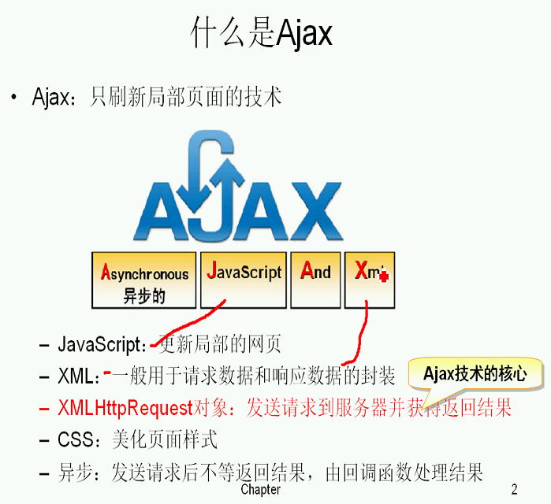

什么是Ajax？
Ajax：只刷新局部页面的技术
Asynchronous:异步的
JavaScript
And
Xml
JavaScript:更新局部的网页
XML:一般用于请求数据和相应数据的封装
XMLHttpRequest对象（Ajax核心对象）：发送请求到服务器并获得返回结果
CSS：美化页面样式
异步：发送请求后不等返回结果，由回调函数处理结果
- (1)创建XMLHttpRequest对象,也就是创建一个异步调用对象.
- (2)创建一个新的HTTP请求,并指定该HTTP请求的方法、URL及验证信息.
- (3)设置响应HTTP请求状态变化的函数.
- (4)发送HTTP请求.
- (5)获取异步调用返回的数据.
- (6)使用JavaScript和DOM实现局部刷新.

XMLHttpRequest对象是整个Ajax技术的核心，提供了异步发送请求的能力
三个方法，五个属性
常用方法：
open（method，URL，async）
send(content)
setRequestHeader(header,value)

常用属性：
1.onreadystatechange:指定回调函数
2.readystate：XMLHttpRequest的状态信息（标识核心状态有哪几种状态）
0，1，2，3，4，
0：没有完成初始化
1：开始发送请求
2：请求发送完成
3：开始读取响应，还没有结束
4：读取响应结束

3.status:HTTP的状态码
4.responseText
5.responseXML
优点：
- 1、最大的一点是页面无刷新，用户的体验非常好。
- 2、使用异步方式与服务器通信，具有更加迅速的响应能力。
- 3、可以把以前一些服务器负担的工作转嫁到客户端，利用客户端闲置的能力来处理，减轻服务器和带宽的负担，节约空间和宽带租用成本。并且减轻服务器的负担，ajax的原则是“按需取数据”，可以最大程度的减少冗余请求，和响应对服务器造成的负担。
- 4、基于标准化的并被广泛支持的技术，不需要下载插件或者小程序。
缺点：
- 1、ajax不支持浏览器back按钮。
- 2、安全问题 AJAX暴露了与服务器交互的细节。
- 3、对搜索引擎的支持比较弱。
- 4、破坏了程序的异常机制。
- 5、不容易调试。